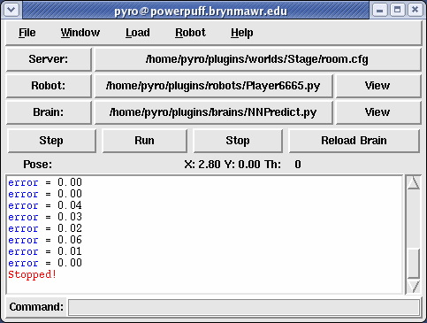
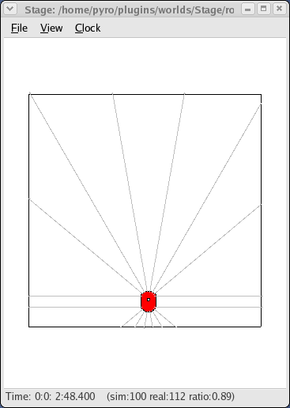
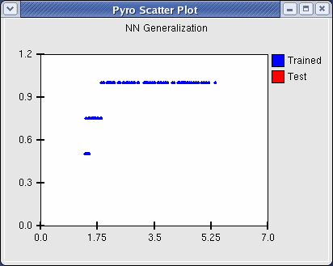
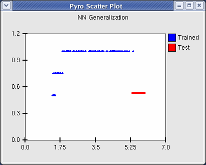
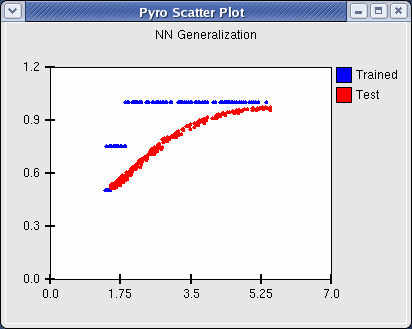
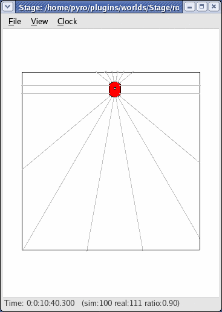
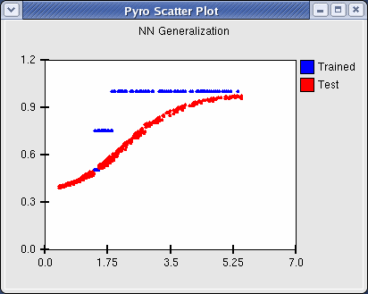

|
|||||||
| [ Home ] | [ Software ] | [ Curriculum ] | [ Hardware ] | [ Community ] | [ News ] | [ Publications ] | [ Search ] |
|
1. Generalization in a Neural Network
1.1. Character RecognitionThe following is an example of using neural networks for character recognition. Despite the limitations of this simple example, it demonstrates the usefulness of generalization. The data set of letter images can be found here: bubo.brynmawr.edu/~dblank/letters.tgz A neural network is trained on a set of images, each one depicting one of the letters A through J in a different font. Then the network is run on new images of the same letters, either handwritten or in a new typeset. The structure is a simple three layer network, organized as follows: The input layer consists of 400 nodes, each one corresponding to a pixel in a 20 x 20 image. The hidden layer consists of 20 nodes; this number should not be too large, or the network will not be forced to generalize sufficiently, but if it is too small, the network may not be able to learn at all. Finally, the output layer consists of one node for each letter in the training set (in this example, there are 10, A-J). The target output for each input image is 1.0 for the node corresponding to the letter shown, and 0.0 for all others. So, for example, the target output for all images depicting the letter A is [1.0, 0.0, 0.0, 0.0, 0.0, 0.0, 0.0, 0.0, 0.0, 0.0]. The following python code sets up this network. It can be run from a python prompt, provided the local directory contains the image files (alternatively, the path name in the calls to Image.open() on lines 29 and 52 can be changed to wherever the images are stored).
#cs380 Spring 2009
#Jesse Rohwer and Julia Kelly
#charnet.py: character recognition neural network
from pyrobot.brain.conx import *
from PIL import Image
#set constants constrained by which image files exist
maxFonts = 7
maxChars = 10
imgSize = 400
#determine which characters the network will be trained on
nChars = 10
#create a three level network
n = Network()
n.addLayers(imgSize, 20, nChars)
n.setEpsilon(0.5)
n.setTolerance(0.1)
n.setReportRate(5)
def train(fonts = [1, 2, 3]):
#set input vectors to greyscale character images, with nFonts images for each character
nFonts = len(fonts)
inputList = [0]*nFonts*nChars
print "Training on fonts: " + str(fonts)
for i in range(nChars):
for j in range(nFonts):
inputList[i*nFonts+j] = [a/255.0 for a in list( Image.open("f"+str(fonts[j])+chr(i+97)+".ppm").convert("L").getdata() )]
#set target vectors to all zeros except for a 1.0 in the index of the input character
targetList = [0]*nFonts*nChars
for i in range(nFonts*nChars):
targetList[i] = [0.0]*nChars
targetList[i][i/nFonts] = 1.0
n.setInputs(inputList)
n.setOutputs(targetList)
n.setLearning(1)
n.train()
def load(filename):
n.loadWeightsFromFile(filename)
def save(filename):
n.saveWeightsToFile(filename)
def trychar(filename):
#runs the network with the image file given by filename as input
#returns the character with the highest value in the network's output vector
#or returns '-' if no ouput node has an activation higher than maxval
output = n.propagate(input = [a/255.0 for a in list( Image.open(filename).convert("L").getdata() )] )
maxval = 0.2 #set threshold below which no meaningful output is inferred
result = '-'
for i in range(nChars):
if output[i] > maxval:
maxval = output[i]
result = chr(i+97)
return result
def test():
#runs the network on images of all characters of all fonts
#prints a table of what the network identifies as the most likely character
n.setLearning(0)
print "Font\t",
for i in range(maxFonts):
print str(i+1)+"\t",
for j in range(nChars):
print "\n \t",
for i in range(maxFonts):
result = trychar("f"+str(i+1)+chr(j+97)+".ppm")
print result,
if result != chr(j+97):
print "X",
print "\t",
print ""
The test() method prints a table of the network's "best guess" for each image. This is simply the letter corresponding to whichever output node has the highest value, or '-' if they are all below some threshold (0.2 by default). Next to incorrect outputs it prints 'X'. The train() method takes a list of which fonts to train the network on, sets up the training inputs and target outputs, and trains the network. Their use is demonstrated here: The load() and save() methods simple wrap Pryo's loadWeightsFromFile() and saveWeightsToFile() functions, and can be used to save and restore weights from a trained network. Note that the number of character and image size affect the structure of the network, so a given network can load only weights from a network trained on the same set of characters and same image size.
[jrohwer@blossom charnet]$ python
Python 2.5.1 (r251:54863, Jun 15 2008, 18:24:51)
[GCC 4.3.0 20080428 (Red Hat 4.3.0-8)] on linux2
Type "help", "copyright", "credits" or "license" for more information.
>>>
>>> from charnet import *
Conx, version 2484 (psyco enabled)
Conx using seed: 1238464016.55
>>>
>>> train()
Training on fonts: [1, 2, 3]
Epoch # 5 | TSS Error: 27.9464 | Correct: 0.5433 | RMS Error: 0.3052
Epoch # 5, Layer = 'output' | Units: 0.5433 | Patterns: 0.0000
Epoch # 10 | TSS Error: 27.2674 | Correct: 0.5533 | RMS Error: 0.3015
Epoch # 10, Layer = 'output' | Units: 0.5533 | Patterns: 0.0000
Epoch # 15 | TSS Error: 26.9051 | Correct: 0.5833 | RMS Error: 0.2995
Epoch # 15, Layer = 'output' | Units: 0.5833 | Patterns: 0.0000
....................
Epoch # 225 | TSS Error: 1.6820 | Correct: 0.9567 | RMS Error: 0.0749
Epoch # 225, Layer = 'output' | Units: 0.9567 | Patterns: 0.7000
Epoch # 230 | TSS Error: 2.8823 | Correct: 0.9767 | RMS Error: 0.0980
Epoch # 230, Layer = 'output' | Units: 0.9767 | Patterns: 0.8667
Final # 232 | TSS Error: 0.0465 | Correct: 1.0000 | RMS Error: 0.0124
Final # 232, Layer = 'output' | Units: 1.0000 | Patterns: 1.0000
>>> test()
Font 1 2 3 4 5 6 7
a a a b X g X a a
b b b b g X f X b
c c c g X g X g X e X
d d d d g X e X g X
e e e f X g X b X e
f f f f f f f
g g g g g g g
h h h h h h h
i i i i j X i i
j j j j j j i X
>>>
The output of test() shows that for the fonts the network was not trained on, it makes many errors but still recognizes some of the images. If we now train it on 1, 2, 3, and 6, we can see what effect that has on its performance on the still unfamiliar 4, 5, and 7:
>>> train([1,2,3,6])
Training on fonts: [1, 2, 3, 6]
Epoch # 5 | TSS Error: 10.8907 | Correct: 0.9200 | RMS Error: 0.1650
Epoch # 5, Layer = 'output' | Units: 0.9200 | Patterns: 0.5000
Epoch # 10 | TSS Error: 13.7503 | Correct: 0.9425 | RMS Error: 0.1854
Epoch # 10, Layer = 'output' | Units: 0.9425 | Patterns: 0.6750
....................
Epoch # 265 | TSS Error: 0.0687 | Correct: 0.9950 | RMS Error: 0.0131
Epoch # 265, Layer = 'output' | Units: 0.9950 | Patterns: 0.9750
Final # 269 | TSS Error: 0.0130 | Correct: 1.0000 | RMS Error: 0.0057
Final # 269, Layer = 'output' | Units: 1.0000 | Patterns: 1.0000
>>> test()
Font 1 2 3 4 5 6 7
a a a a a a a
b b b b g X b b
c c c c c c c
d d d f X c X d g X
e e e f X g X e e
f f f f f f f
g g g a X a X g g
h h h b X h h h
i i i i j X i f X
j j j c X j j f X
>>>
1.2. Generalization with a RobotCan a neural network learn to do something for which it wasn't explicitly trained? This demonstration will examine a very simple learning robot problem. A simple three-layer neural network: Input: all of the sonar sensor readings (scaled between 0 and 1) plus the translate and rotate movements made on the last step (also scaled between 0 and 1) Output: what movements (translate and rotate) should the robot make Here is the program:
from pyrobot.brain import Brain
from pyrobot.brain.conx import *
from pyrobot.gui.plot.scatter import Scatter
import pyrobot.system.share as share
class NNPredict(Brain):
def setup(self):
""" Create the network. """
self.sensorCount = self.robot.range.count
self.net = Network()
self.net.addLayers(self.sensorCount + 2, 5, 2)
self.net.initialize()
self.net.setVerbosity(0)
self.net.setEpsilon(0.5)
self.net.setMomentum(.1)
self.net.setLearning(1)
self.trans = 0
self.rotate = 0
self.counter = 0
self.maxvalue = self.robot.range.getMaxvalue()
self.new = [self.scale(s.distance()) for s in self.robot.range["all"]]
self.plot = Scatter(app=share.gui, linecount=2, connectPoints=0,
xEnd=7.0, yEnd=1.2, legend=["Trained", "Test"],
title="NN Generalization", width=400)
self.min = 0.0
def destroy(self):
self.plot.destroy()
def scale(self, val):
return (val / self.maxvalue)
def avoid(self):
# set targets
target_trans = 1.0
target_rotate = 0.5
# left and right and front:
# This works for Pyro Version 4.3.1 or greater.
self.min = min([s.distance() for s in self.robot.range.span(45, -45)])
left = min([s.distance() for s in self.robot.range.span(45, -45)])
right = min([s.distance() for s in self.robot.range.span(45, -45)])
# Other versions, use: range["front"], range["front-left"], range["front-right"]
if left < 1.5 or right < 1.5:
target_trans = 0.5
elif left < 3.5 or right < 3.5:
target_trans = 0.75
return [target_trans, target_rotate]
def step(self):
target = self.avoid()
old = self.new + [self.trans, self.rotate] #trans and rotate
self.new = [self.scale(s.distance()) for s in self.robot.range["all"]]
# results
if self.net.learning:
e, c, t, p = self.net.step(input=old, output=target)
if self.counter % 10 == 0:
print "error = %.2f" % e
self.trans, self.rotate = target
else:
old = self.new + [self.trans, self.rotate]
self.net.step(input=old, output=target)
self.trans, self.rotate = self.net['output'].activation
if self.counter % 10 == 0:
print self.trans, self.rotate
self.plot.addPoint(self.min, self.trans, not self.net.learning)
self.robot.move((self.trans - .5)/2.0, (self.rotate - .5)/2.0)
self.counter += 1
def INIT(engine):
return NNPredict('NNPredict', engine)
[
Load a 5 meter x 5 meter world, Pioneer robot with 16 sonar sensors, and NNPredict.py brain. Pyro window should look something like:  Start the robot between the east and west walls, facing north, near the south wall:  Click Run. As this is running, it is training the neural network as fast as it can. The network is trained to answer the question: Given the sonar sensor readings and the tranlation and rotation of the previous time step, what should the next translation and rotation be? When it gets to the opposite side of the room, Click Stop.
You'll see a scatter plot like:  This plot shows on the X axis the distance to the closest wall in the front. The Y axis shows the teacher value in blue that indicates the desired speed of the translate motor command. You'll notice that there are three levels of output (1.0, .75, and .5) representing full speed, medium speed, and stopped, respectively. If the minimum distance (of the front-facing sonars) is between about 1.75 meters and 7.0 meters, then the robot is instructed to go full speed (1.0). If the minimum distance is betwwen about 1.5 and 1.75, then the translation speed is set to .75 (medium speed). Finally, if the minumum distance is less than about 1.5, then the translation is set to 0.5 (stopped). Now, we have just trained the neural network on one run across the room. How will the network perform if we let it drive the motors? That is, instead of the teacher telling the network what to do, the output of the network will determine the commands to the rotation and translation motors. To test, turn learning off in the neural network by typing the following in the Pyro command window:
self.net.setLearning(0) Now, position the robot back at the south wall, and click on Run. You should see something like:  The network hasn't learned much, giving output that is around 0.5, and thus the robot doesn't move much. To clear that data from the plot:
self.plot.clear(1) Now, you can train the robot for a while by turning learning back on, and dragging the robot to the far wall, and letting it experience all of the positions repeatedly.
self.net.setLearning(1) Click Run until it gets to the stopping position, and then press Stop. You may have to do this many times (10 - 20). You will see an average error displayed in the Pyro window. Let it run until you don't see any error. You can also save and load weights from a previous training session with:
self.net.saveWeightsToFile("room.wts")
self.net.loadWeightsFromFile("room.wts")
Now, let's turn learning off again and see how the network performs now.
self.net.setLearning(0)  You'll notice that the red dots are a smoothed version of the blue training points. Finally, let's put the robot in a position for which it was not trained:  Here, we place the robot very close to the wall. Now, what do you think will happen?  The robot actually backs up, even though it was never trained to back up. Explain the behavior. Next: Autoassociative and Recurrent Networks Up: PyroModuleNeuralNetworks |
| [ Home ] | [ Software ] | [ Curriculum ] | [ Hardware ] | [ Community ] | [ News ] | [ Publications ] | [ Search ] |
 View Wiki Source | Edit Wiki Source | Mail Webmaster
View Wiki Source | Edit Wiki Source | Mail Webmaster | |||||||